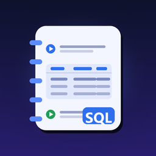
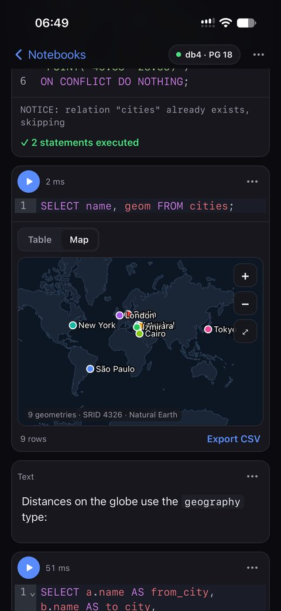
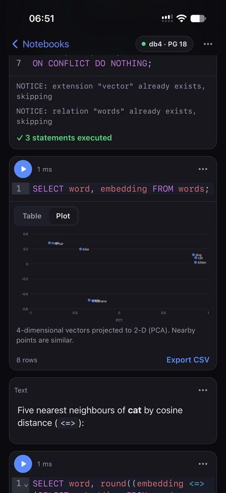
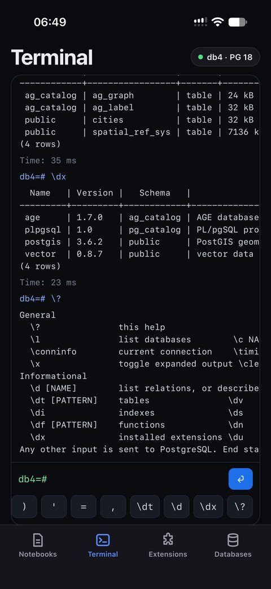
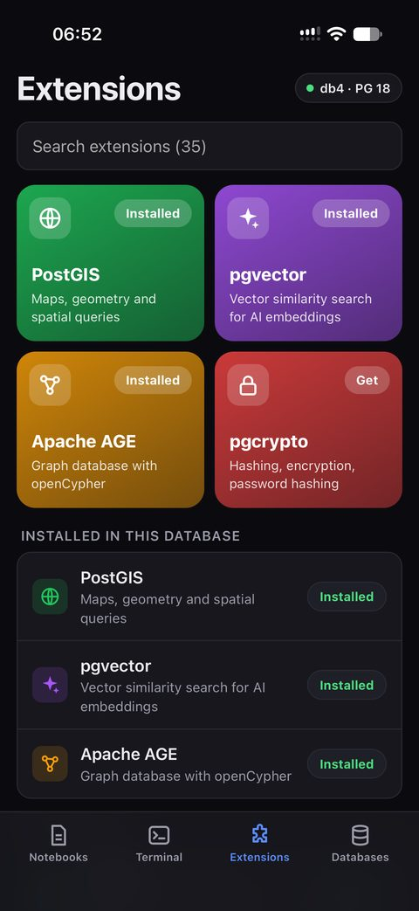
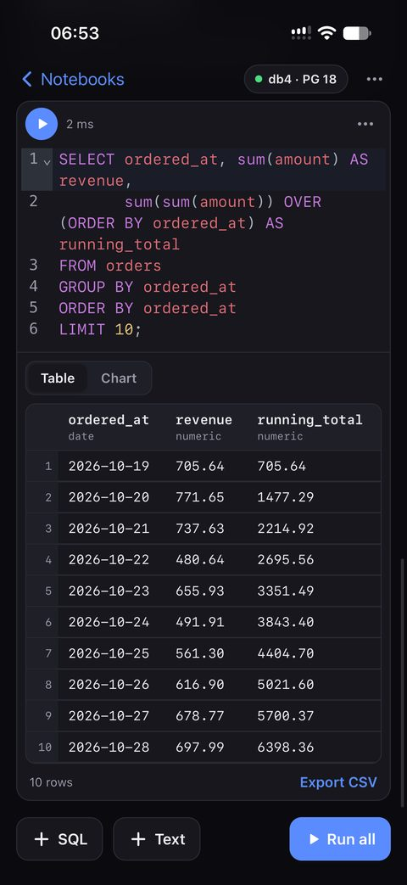
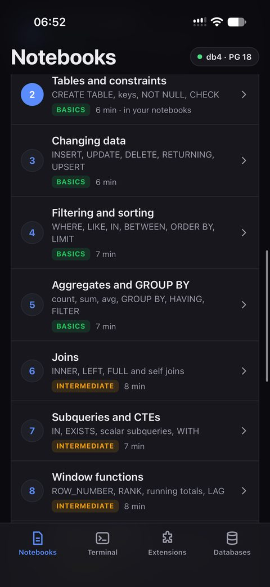
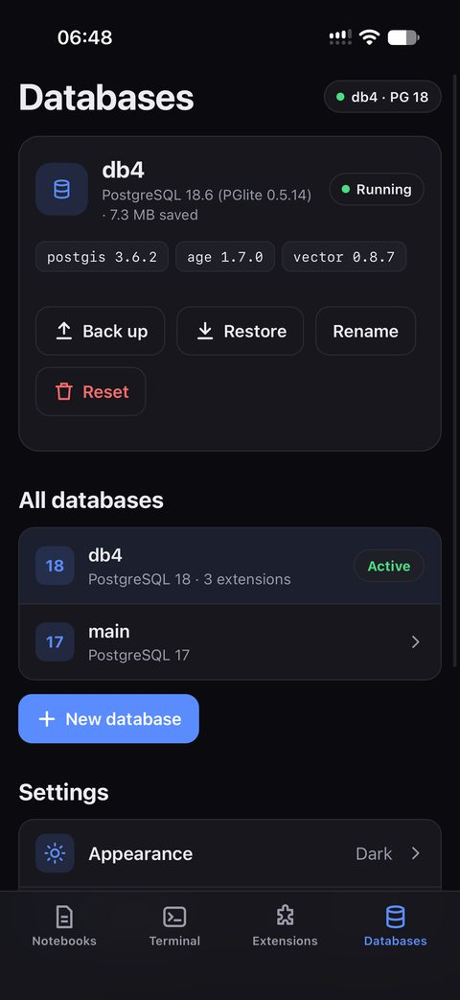

Run PostgreSQL on your iPhone
Tuple is a real PostgreSQL 18 server on your iPhone and iPad: offline, in milliseconds. PostGIS maps, pgvector search, Apache AGE graphs, a psql terminal and SQL notebooks. No server, no network, no account.







A database, not a client
Questions
How do I run PostgreSQL on my iPhone?
Install Tuple from the App Store and open it. A PostgreSQL 18 server starts on the device in milliseconds; there is nothing to configure and no server to connect to.
Is Tuple a client for a remote PostgreSQL server?
No. The database runs on your iPhone or iPad itself, compiled to WebAssembly with PGlite, so it works offline.
Can I use PostGIS and pgvector on iOS?
Yes. PostGIS, pgvector, Apache AGE and 30+ other extensions are bundled in the app and need no download.
Which PostgreSQL versions does Tuple support?
PostgreSQL 18, 17 and 16. Each database can use its own version and extensions.
Does Tuple have a psql terminal?
Yes, a psql-style terminal with \d, \dt, \dx, \df, \l, \c, \x and \timing.
Can I learn SQL on my iPhone with Tuple?
Yes. Free lessons cover SELECT, filtering, joins, GROUP BY, CTEs and window functions, each one a notebook you can run.
Where is my data stored?
Only on your device. Notebooks are .ipynb files in Files › On My iPhone › Tuple, and databases can be backed up and restored as .tar.gz files.